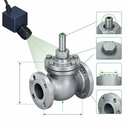
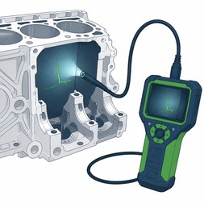
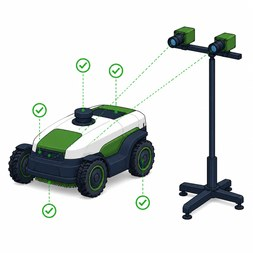
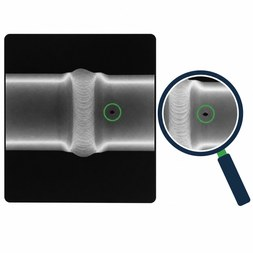
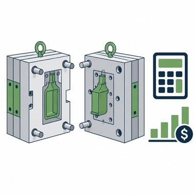
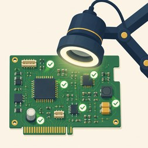
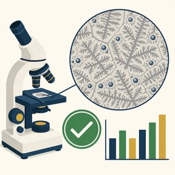
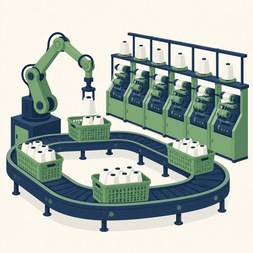

Partner with SRIT to turn intelligent systems into real-world potential. Our faculty and student teams build AI, vision and automation solutions for real industrial problems.
Capabilities our teams have built and deployed.
Quality, inspection, metrology, documents and people analytics. Click any card for the full project details.

Spots surface defects in real time.

Camera-based measurement in seconds.

Finds hidden cracks inside engines.

Dual-camera check of every assembly step.

Sorts scrap metal by alloy on the conveyor.

Reads X-ray weld images to standard.

Smarter mould costing and planning.

Reads 2D drawings into structured data.

Turns single-line diagrams into wiring diagrams.

Fair, fast candidate screening.

Checks every board part against its parts list.

Grades casting microstructure in seconds.

PLC-controlled loading for 16 autoconers.

Sound waves boost clean-water output.

Step-by-step AR guidance for error-free assembly.
Faculty teams take live problems from industry partners and solve them in real time with students.
Bring a live shop-floor, quality or process challenge.
A confidentiality agreement and joint scoping with a multidisciplinary faculty team.
Data collection, annotation and a quick proof of concept.
A lab prototype validated on real industry data, rated on the TRL scale.
Deployment on site, plus IP filing and joint patents where relevant.
AI quality checking of radiography images to ASTM standards, automated visual inspection and AI-assisted metrology.
Digital twin prototyping and simulation, and AI- and AR-based assembly guidance systems.
NDA-backed engagement, joint patents through the SRIT IPR Cell, and support under the MSME Business Incubator scheme.
Sri Ramakrishna Institute of Technology, Pachapalayam (Post), Perur Chettipalayam, Coimbatore – 641 010, India.
Brochure (PDF) Email me the brochure
No mail app? Open in Gmail or write to hive@sritcbe.ac.in
 Scan for HIVE
Scan for HIVE